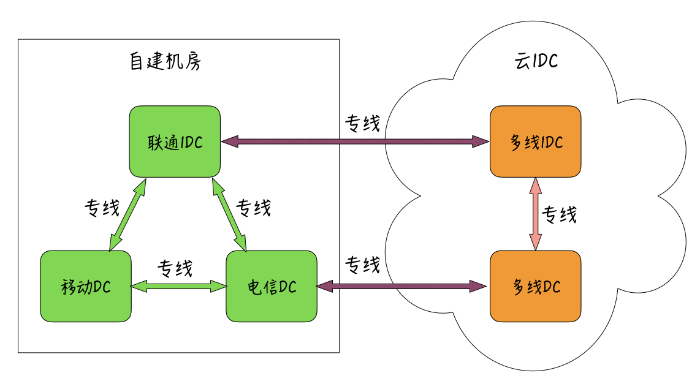
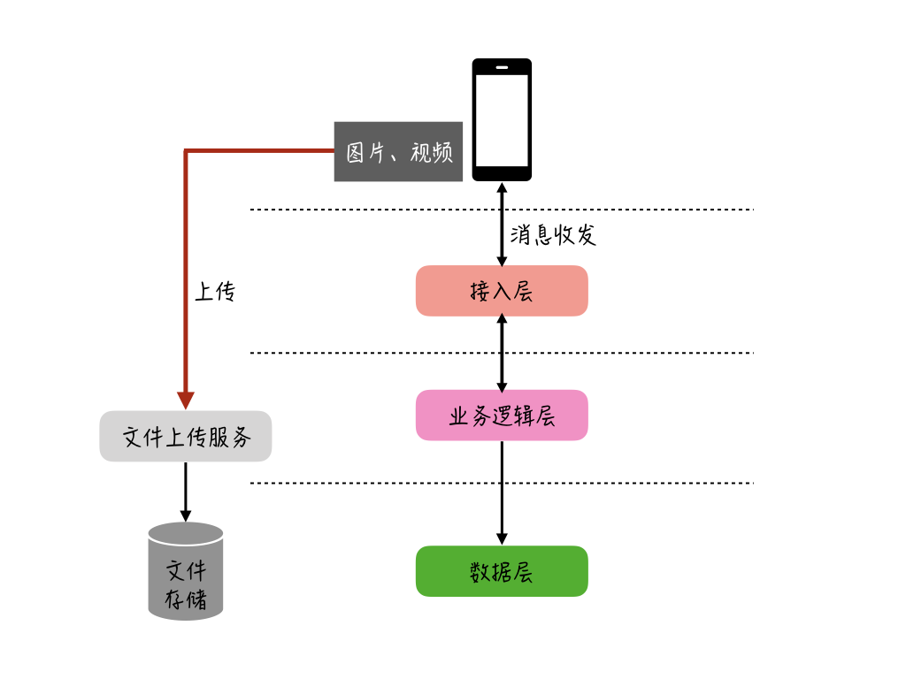
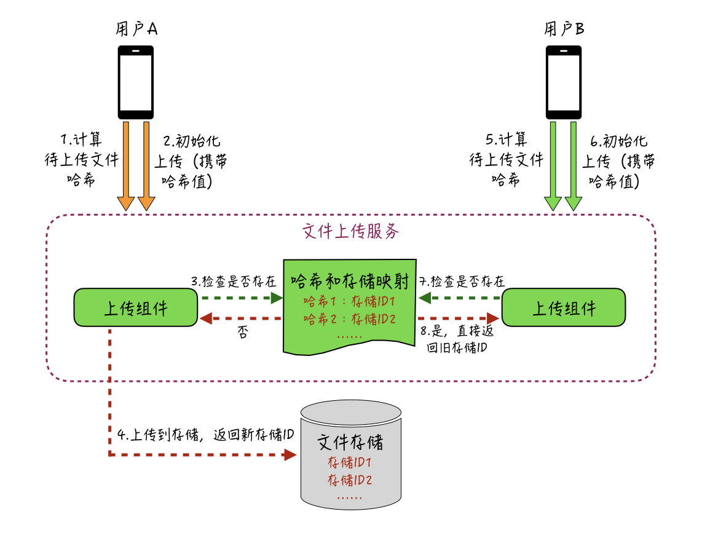

- 00 开篇词 搞懂“实时交互”的IM技术，将会有什么新机遇？.md.html
- 01 架构与特性：一个完整的IM系统是怎样的？.md.html
- 02 消息收发架构：为你的App，加上实时通信功能.md.html
- 03 轮询与长连接：如何解决消息的实时到达问题？.md.html
- 04 ACK机制：如何保证消息的可靠投递？.md.html
- 05 消息序号生成器：如何保证你的消息不会乱序？.md.html
- 06 HttpDNS和TLS：你的消息聊天真的安全吗？.md.html
- 07 分布式锁和原子性：你看到的未读消息提醒是真的吗？.md.html
- 08 智能心跳机制：解决网络的不确定性.md.html
- 09 分布式一致性：让你的消息支持多终端漫游.md.html
- 10 自动智能扩缩容：直播互动场景中峰值流量的应对.md.html
- 11 期中实战：动手写一个简易版的IM系统.md.html
- 12 服务高可用：保证核心链路稳定性的流控和熔断机制.md.html
- 13 HTTP Tunnel：复杂网络下消息通道高可用设计的思考.md.html
- 14 分片上传：如何让你的图片、音视频消息发送得更快？.md.html
- 15 CDN加速：如何让你的图片、视频、语音消息浏览播放不卡？.md.html
- 16 APNs：聊一聊第三方系统级消息通道的事.md.html
- 17 Cache：多级缓存架构在消息系统中的应用.md.html
- 18 Docker容器化：说一说IM系统中模块水平扩展的实现.md.html
- 19 端到端Trace：消息收发链路的监控体系搭建.md.html
- 20 存储和并发：万人群聊系统设计中的几个难点.md.html
- 21 期末实战：为你的简约版IM系统，加上功能.md.html
- 22 答疑解惑：不同即时消息场景下架构实现上的异同.md.html
- 结束语 真正的高贵，不是优于别人，而是优于过去的自己.md.html
- 捐赠
14 分片上传：如何让你的图片、音视频消息发送得更快？
你好，我是袁武林。
在前面几节课中，我基本上都是从通用文本消息的角度出发，较为深入地分析讲解了即时消息相关的一些重要特性及核心概念。
随着网络环境的大幅改善及网络资费的显著降低，在很多即时消息场景下，人们的互动不再局限于传统的文本消息，越来越多的用户通过图片、语音、视频等丰富的多媒体消息来完成互动。相较于文本消息而言，多媒体消息在易用性和情感表达上更有优势。
但是，多媒体消息相对也会大很多。比如，一条文本消息只有不到100字节，但一条视频消息可能超过100MB。因此，多媒体消息在网络传输、实时触达等方面相对更难一些。
在IM场景中，针对图片、语音、视频的优化一直都是一个需要长期投入和突破的重点。今天，我们就来看一看针对多媒体消息的优化手段都有哪些。由于篇幅原因，我会分成两篇，分别从发送和播放两个角度来谈一谈。
让图片和视频发送得又快又稳
要想让图片、视频、语音等多媒体消息发送得又快又稳，我们可以从“多上传接入点”“优化上传链路”“分片先行下推”“分片上传”等几种优化方式上着手。下面我分别来详细讲解一下。
多上传接入点
先来看一下，我们针对多媒体消息上传的第一种优化手段。国内目前的固网宽带运营商构成复杂，且用户宽带向来呈现出“南电信北联通”的分布现状。而在移动网络下，移动、电信、联通三足鼎立，再加上还有教育网和海外两大网络体系，整体网络结构更加复杂，跨运营商网络访问的高延迟和不稳定性一直是个无法解决的老大难问题。
对于传输数据更多的视频、图片等多媒体消息来说，如果出现用户跨运营商来上传文件，多次RTT（Round-Trip-Time，往返时延）带来的用户体验会更差。因此，要提升多媒体消息的上传性能和成功率，我们第一步就要从接入点着手。
传统的优化方式是：针对不同的主流运营商提供不同的上传接入点IP，然后通过运营商DNS解析，让用户能通过本运营商的上传接入点来快速上传图片和视频；相应后端的图片上传存储服务，也可以部署在多线机房，这样上传服务也能快速地把文件流提交给存储层，从而避免从接入点到存储服务的跨网开销，也能解决其他运营商的用户下载图片时需要跨网的问题。
对于拥有多机房的公司，也可以只把上传存储服务部署在单线机房，然后再通过专线解决多个单线机房之间的访问。比如，目前微博消息箱图片的上传，就是采用这种网络访问架构。大概IDC网络架构如下图：- 
不过，虽然多个运营商接入点IP能解决跨运营商网络访问的问题，但是多个接入点IP在管理和使用上会比较复杂。这个也是你在以后的实际应用中需要注意的地方。
有条件的公司，还可以利用多线BGP（Border Gateway Protocol，边界网关协议）机房托管，对外只提供一个IP，来让访问用户自动选择访问的最佳路由。
BGP的技术原理，简单说就是：允许同一IP在不同运营商网络中广播不同的路由信息。目前众多云厂商都提供了多线BGP机房托管，对于自建机房能力薄弱但对访问性能要求较高的公司来说，也可以尝试接入使用。具体BGP的实现细节我在这里就不展开了，你可以作为课后阅读来进行补充。
上传链路优化
在上传普通文本消息时，为了保证发送通道的稳定性，一般会把接入服务和业务逻辑处理服务进行拆分部署，再加上最前端还有负载均衡层，这样，实际的上传链路至少已经有3层。另外，多媒体消息在上传时，在业务逻辑层后面一般还有一个用于文件存储的服务。因此，如果多媒体消息也通过文本消息的通道上传，整体链路会比较长。
对于图片、视频这种数据传输量大的消息来说，在这么长的链路上来回多次进行数据拷贝，整体性能会比较差，同时也会导致不必要的带宽浪费，而且可能会造成整个文本消息通道阻塞，影响普通消息的收发。
因此，出于性能和隔离的考虑，我们一般会把这些多媒体消息上传通道和普通消息收发通道独立开。发送多媒体消息时，先通过独立通道上传文件流，上传完成后会返回文件的唯一标识ID，然后再把这个唯一标识ID作为消息的引用，通过普通消息收发通道进行发送。具体上传过程你可以参考下图。- 
语音的“分片先行下推”
由于语音消息一般会有录制时长的限制，和图片、视频等多媒体消息相比，上传的文件较小，也相对比较可控。
从接收方的角度看，图片和视频在接收查看的时候，都会有缩略图或者视频首帧图用于预览，不需要一开始就下载原文件，而语音消息没有预览功能，只能下载原文件用于播放。如果语音也和图片、视频等多媒体消息走一样的上传下载逻辑，播放时就需要去下载原文件，这样会容易出现下载慢、卡顿的情况。
因此，如果有两人正在通过语音实时聊天，我们更希望通过长连下推的方式将语音流推到对端，这样用户在播放语音时就不需要再从远程临时下载文件，使用流畅度也会更好。
可见，在一些即时消息场景的实现中，会通过普通消息收发的长连通道来分片上传语音流，这样更方便通过长连来下推给接收方。
另外，IM服务端在接收到分片后，可以同步先行把分片的二进制流下推给接收方但暂不显示，不需要等所有分片都在后端存储完成再进行下推。这样的好处是：当语音的最后一片到达后端并存储完成后，IM服务端只需要给接收方推一条“所有分片存储完成”的轻量信令，即可让接收方马上看到这条语音消息。这个“分片先行下推”机制在实时性上比远程临时下载的方式更好，能有效降低语音聊天的延时。
分片上传
要提升多媒体消息的上传性能和成功率，另一个比较大的优化手段是“分片上传”机制。
所谓分片上传，是指“在客户端把要上传的文件按照一定规则，分成多个数据块并标记序号，然后再分别上传，服务端接收到后，按照序号重新将多个数据块组装成文件”。
对于图片、视频、语音等这种较大的消息来说，采用分片上传可以让客户端在分片完成后，利用“并行”的方式来同时上传多个分片，从而提升上传效率。
在一些网络环境较差的场景下，采用“分片”的方式，可以在上传失败后进行重试时，不必重新上传整个文件，而只需要重传某一个失败的分片，这样也能提升重新发送的成功率和性能；此外，类似语音这种流式消息，在上传时并不知道文件最终大小，采用分片上传可以让消息文件先部分上传到服务器，而没必要等到录制完才开始上传，这样也能节约上传的整体时长。
分多大？
在分片上传中，“分片大小”是一个重要但又比较有挑战的问题。
- 分片太大，片数少，上传的并发度不够，可能会降低上传效率，每个大的分片在失败后重传的成本会比较高。
- 分片太小，片数多，并发需要的TCP连接太多，多条TCP连接的“窗口慢启动”会降低整体吞吐，两端拆分与合并分片的开销也相应增加，而且传输时的额外流量（HTTP报头）也会更多。
所以，不同网络环境下如何选择一个“合适”的分片大小至关重要。
一般来说，在网络状况较好的环境，比如在WiFi、4G下，相应的分片大小应该设置得更大一些；而在2G、3G弱网情况下，分片可以设置小一点。
对于分片大小的设置，简单一点的处理可以按照网络状态来粗略划分。比如，WiFi下2M，4G下1M，3G/2G下256K。
当然，这个数值不是绝对的，很多情况下3G的网络性能可能比WiFi和4G下还好。因此，很多大厂会尝试通过算法来“自适应动态根据网络现状调整分片大小”，比如腾讯内部的“鱼翅”项目，就是通过算法来动态调整分片大小，达到优化传输速度和成功率的效果。有兴趣的话，你可以课后了解一下，也欢迎你在留言区与我一起探讨。
断点续传
在上传视频、图片等较大文件时，整体耗时会比较长，用户由于某些原因可能需要在上传未完成时临时暂停，或者遇上系统意外崩溃导致上传中断的情况。对此，如果要再次上传同一个文件，我们希望不必再重新上传整个文件，而是从暂停的位置“断点续传”，而分片上传机制，就能相对简单地实现“断点续传”功能。
给每一次上传行为分配一个唯一的操作标识，每个分片在上传时除了携带自己的序号外，还需要带上这个操作标识，服务端针对接收到的同一个操作标识的分片进行“暂存”，即使由于某个原因暂停上传了，这些“暂存”的分片也不会马上清理掉，而是保留一定的时间。
注意：- 这里只保留一定的时间主要是出于成本考虑，很多上传暂停或者失败的情况，用户并不会继续上传，如果一直保留可能会浪费较多资源。
续传时继续以之前同一个操作标识来上传，客户端先检查服务端已有分片的情况，如果没有过期就继续从上次的位置续传，否则需要重新从头开始上传。“断点续传”功能实现上比较简单，但在上传大文件时，对于提升用户体验是比较明显的。
秒传机制
在群聊和小组等半公开的IM场景中，经常会有用户收到传播度较广的同一图片、视频等多媒体消息的情况。这些重复的图片和视频，如果每次都按照分片上传、落地存储的方式来处理，会造成服务端存储的巨大浪费。微博消息业务之前做过一个统计：一周内，业务中所有上传的图片和视频的重复率能达到30%以上。
此外，对于在服务端中已经存在的视频或者图片，如果能在上传前识别出来，就能避免用户再次上传浪费流量，也能方便用户直接快速地完成上传操作。因此，通过“秒传”机制，可以有效实现优化用户上传的体验，同时减少用户的流量消耗。
秒传机制的实现其实比较简单，如下图所示：- 
客户端针对要上传的文件计算出一个特征值（特征值一般是一段较短的字符串，不同文件的特征值也不一样），真正上传前先将这个特征值提交到服务端，服务端检索本地已有的所有文件的特征值，如果发现有相同特征值的记录，就认定本次上传的文件已存在，后续就可以返回给客户端已存在文件的相关信息，客户端本次上传完成。
这里需要注意的是，特征值的计算一般采用“单向Hash算法”来完成，如MD5算法、SHA-1算法。但这些算法都存在“碰撞”问题，也就是会有极低概率出现“不同文件的特征值一样的情况”。
要解决这个问题的一个很简单的办法是：使用多种单向Hash算法，在都一致的情况下才判断为重复。
小结
这一讲，我从IM中图片、语音、视频等多媒体消息的发送场景的优化出发，分析了目前业界比较常用的一些优化手段。比如下面几种。
- 通过“多上传节点”策略，优化上传的网络访问，避免用户跨运营商网络带来的高延迟和不稳定。
- “优化上传链路”，隔离多媒体消息文件上下行通道和普通消息的收发通道，尽量缩短用户到文件存储服务的距离，针对语音消息还可以通过“先行下发”来降低语音聊天的延迟。
- 采用分片上传机制，并分出合适的分片大小，能较大改善上传成功率和速度，对于上传失败后的重试行为也更为友好。
- 断点续传功能和秒传功能解决了“已上传的文件流和片段不再需要重新上传”的问题，不仅节约了资源成本，也大幅提升了用户体验。
图片、视频、音频等多媒体消息的上传优化一直是业界研究的重点方向，除了从架构和设计的角度来优化之外，还有很多基于媒体文件编解码方面的优化。因此，这也是一个需要很多综合知识的环节，需要你去不断学习和实践。在课程之外，你也可以投入更多时间来补充这方面的相关知识。
最后给你留一个思考题：多媒体消息上传的优化，除了本次课程中提到的这些手段，你还了解哪些多媒体消息上传方面的优化方式呢？
以上就是今天课程的内容，欢迎你给我留言，我们可以在留言区一起讨论。感谢你的收听，我们下期再见。
© 2019 - 2023 Liangliang Lee. Powered by gin and hexo-theme-book.